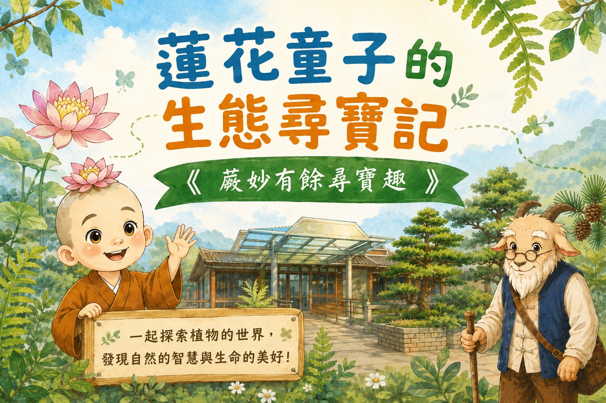
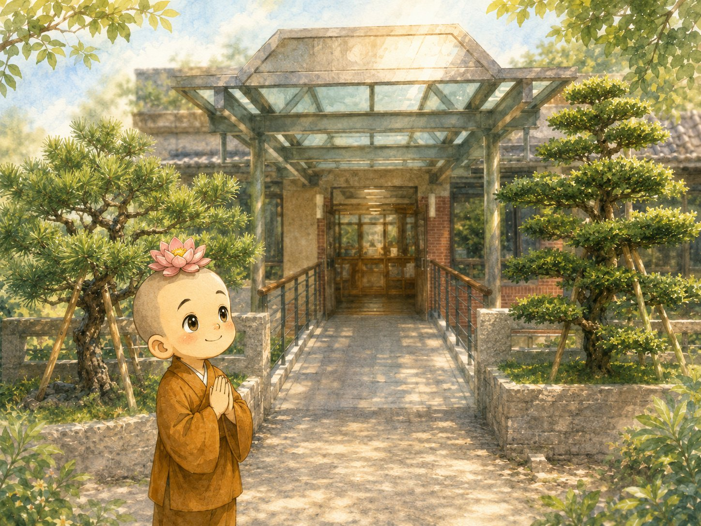

松樹一年四季常青，耐受風吹如如不動，彷彿是一尊從容慈祥的來迎菩薩。蓮花童子看到眼前綠意盎然的羅漢松和五葉松，再看看自己毛毛躁躁的心，希望也能像松樹一樣安住於天地之間……
請和家人（或夥伴）一起做三次深呼吸，感覺身體放鬆的感覺。
看一看，羅漢松和五葉松的葉子形狀有甚麼不同？請直接在紙上把它畫下來。
松樹為什麼能夠四季常青？點擊下方聆聽解說：
Q：想一想，為什麼松樹一年四季安然常青？
您已成功解鎖【樁位 1】專屬通關徽章！
(恭喜完成第一站！)